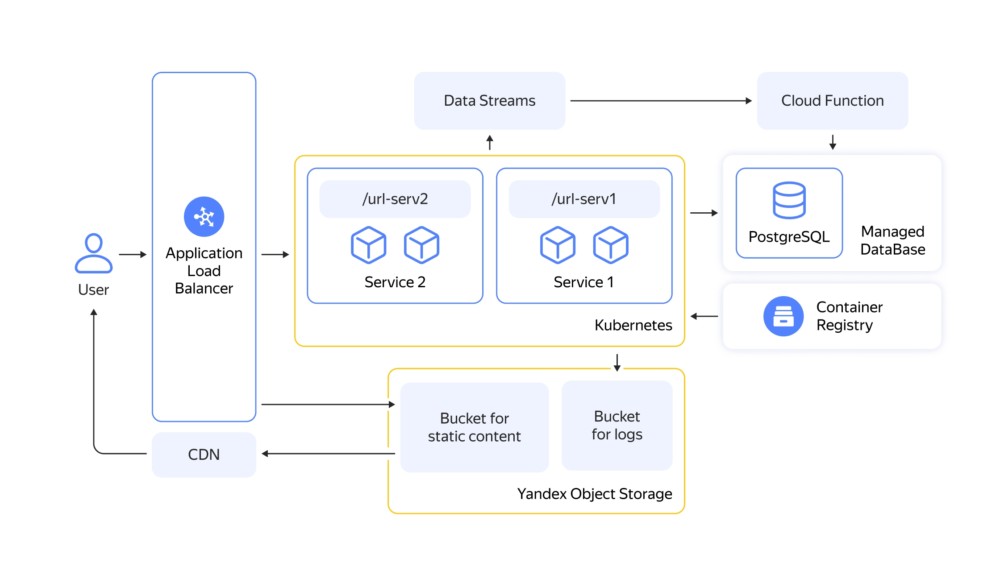

Благодаря тому, что части приложения автономны, его, как и любую распределённую систему, легко развивать и обновлять: добавление или улучшение отдельных функций никак не повлияет на остальные компоненты. И это главное отличие микросервисного приложения от монолитного, в котором все блоки кода связаны между собой, и даже небольшие изменения хотя бы в одном из них поменяют работу всей системы.
Микросервисная архитектура vs монолитная
Приложение с микросервисной архитектурой разделено на небольшие не зависящие друг от друга компоненты — микросервисы. У каждого из них своя бизнес-задача: например, управлять каталогом, хранить и обновлять содержимое корзины или проводить оплату заказа.
Расскройте главное отличие микросервисов от монолитов
Вот пример архитектуры микросервисов в Yandex Cloud
| Микросервисное приложение | Монолитное приложение |
|---|---|
| Скорость релизов | Скорость релизов |
| Чтобы запустить новые функции или обновить существующие, достаточно изменить один модуль приложения. Это позволяет ускорить разработку и чаще выпускать обновления. | Чтобы протестировать релиз и подготовить к нему приложение, нужно обновить всю систему, что может привести к неожиданным сбоям и увеличить время отладки. |
| Диапазон технологий | Диапазон технологий |
| Для каждого сервиса можно использовать свой язык программирования, способ хранения данных, необходимые библиотеки. | Код монолитного приложения — единое целое, поэтому вся команда должна придерживаться уже выбранных инструментов и методов. |
| Процесс разработки | Процесс разработки |
| Микросервисная архитектура позволяет вести гибкую разработку и при необходимости быстро изменить состав команды или требования к продукту. | Монолитный подход более требователен к порогу вхождения: каждому новичку придётся полностью изучить код системы и её функциональность. |
| Оптимизация приложения | Оптимизация приложения |
| Управление ресурсами, инфраструктурой и функциональностью приложения можно доверить разным сервисам и оптимизировать каждый из них по отдельности. | При оптимизации монолитного приложения нужно постоянно учитывать внутренние связи между его модулями: обновление хотя бы в одного из них приведёт к изменению системы в целом. |
| Масштабируемость | Масштабируемость |
| Если нагрузка на ресурсы микросервисов увеличится, они масштабируются автоматически. А гибкий процесс разработки позволит усилить команду дополнительными сотрудниками. | Если вы решите изменить хотя бы один блок, придётся масштабировать всё приложение. |
| Отказоустойчивость | Отказоустойчивость |
| Проблемы внутри одного сервиса не нарушат работу системы в целом и не приведут к появлению новых ошибок. | Все элементы монолитного приложения связаны друг с другом напрямую или косвенно: сбой внутри одного модуля может вызвать полный отказ системы |
Конечно, микросервисный подход не лишён недостатков. При кажущейся простоте и логичности деления большого продукта на самостоятельные сервисы разработка распределённой системы — процесс сложный и с технической, и с организационной точек зрения. Плюсы могут обернуться минусами:
- Сбой одного сервиса не приведёт к полному отказу приложения, но любая распределённая система имеет и другие слабые места: потенциальные проблемы связи её элементов друг с другом, сетевые задержки, возможная неконсистентность данных.
- Вы сэкономите, если будете платить только за те ресурсы, которые потребляют микросервисы, но должны будете предусмотреть расходы на внедрение облачных технологий, отдельное развёртывание каждого нового сервиса и его покрытие отдельными тестами и мониторингами.
- Контролировать качество решения отдельных бизнес-задач проще и эффективнее, чем оценивать систему в целом, но настроить рабочие процессы большой команды разработчиков не так уж легко.